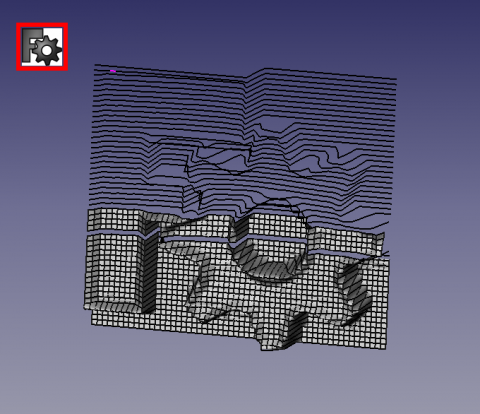

Description
specially written for easy lofting with lines generated by the Macro Texture (but may be suitable and used for common lofts)

Use
Copy the macro and the icon in your macro directory.
- Sort : Sort the data entries.
- Reverse : Reverse the order of data.
- Reset / Upgrade: This button as many function:
- If any selection in 3Dview this button Upgrade is displayed.
Select your object in the 3Dview or in the Combo view and click this button for upgrade the data in the macro, the button changes in Reset.
- If one or many object(s) are selected before the run macro this button Reset is displayed.
Alls objects selected are displayed in the macro window.
After having Sort or Reverse the data displayed, this button Reset is used to return to the original order.
If you click in the 3DView or unselected all objects this button is used for reset to macro.
If you adding one or more object(s) in the list this button is used.
- Select all : Select all objects in the document.
- SpinBox : Increment the jump x Elements (Default 1 all objects are used).
- Quit : Quit the macro.
- CheckBox If the CheckBox is checked the work progress is displayed if not only the ProgressBar work (this method is faster) (Checked by default).
- Launch the Lofting : Launch the Lofting and reset the macro. The number of selection are displayed and the real number lofted if the spinBox "jump" is used
The interface
Script
The icons for you toolBar
Download the macro to Gist Macro_FCCreaLoft.FCMacro
Links
The forum discussion Texture
The Macro Texture
Version
ver 00.00 : 06/02/2016
ver 00.02 : 09/02/2016 : Add button "Select all" and little option displayed in the button Launch (number selections) and (real number loft)
ver 00.03 : 09/02/2016 : minor (display on button)
{kind=link}
{kind=link}
{kind=link}